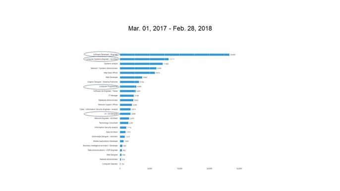
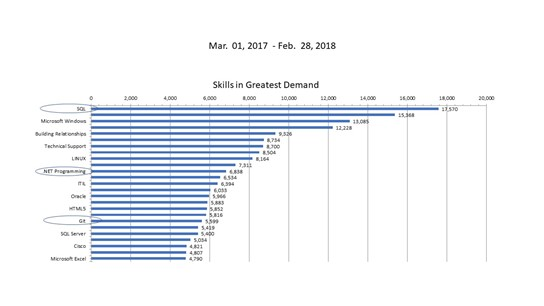
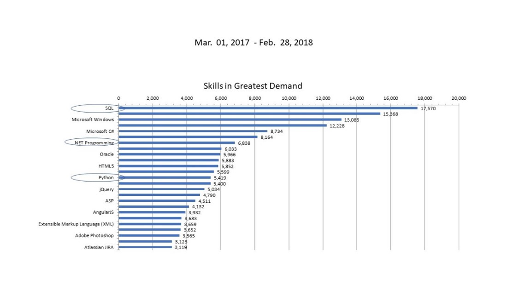
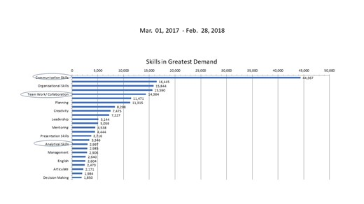
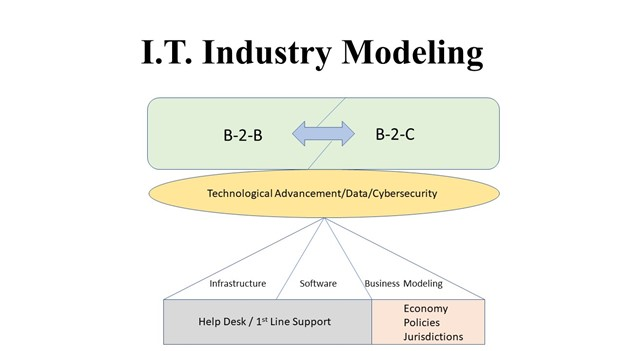

On 31 Dec 20, CIO released “10 most in-demand tech jobs for 2021” and Software developer went to No. 8 (White 2020) The IT job market changes rapidly. CIO then released another report “13 most difficult-to-fill IT jobs” in April 21, stating that in their 2021 State of the CIO survey, cybersecurity, AI/machine learning and data science/analytics were the top three (Ambrosio, 2021).

Source: Top I.T. Job Titles for the period 1 Mar 2017 to 28 Feb 2018, Burning Glass Technologies, provided by RMIT. Phronesis Collective group members’ Ideal Jobs are circled.
Groups Required Skillset
An analysis of Phronesis Collective required skillset is detailed below.
Specialised Skills
The following 2 bar charts revealed our required skill sets (circled) in comparison to IT industry’s demand.

Source: Specialised Skills in Greatest Demand for the period 1 Mar 2017 to 28 Feb 2018, Burning Glass Technologies, provided by RMIT.

Source: Software & Programming Skills in Greatest Demand for the period 1 Mar 2017 to 28 Feb 2018, Burning Glass Technologies, provided by RMIT.
Top 3 specialised skills not included in our group required skill sets:
- Microsoft Windows (#3, 13,085 postings)
- JAVA (#4, 12,228 postings)
- Building Relationships (#5, 9,326 postings)
Top 3 Software & Programming skills not included in our group required skill sets:
- Microsoft Windows (#3, 13,085 postings)
- JAVA (#4, 12,228 postings)
- Microsoft C# (#5, 8,734 postings)
Some of the skills our group required are also in high demand, such as SQL, Javascript, while a few of our required skills are not in high demand, probably because these skills are prerequisite skills we yet to attain. This also outlined skill gaps in the industry and is worthwhile for our group to consider developing and attaining.
One important lesson learnt is that we should know well of those commonly known skills and then aim to develop in a few specialised fields.
Baseline/General Skills
The following bar chart revealed our general/baseline skill sets (circled) in comparison to I.T. industry’s demand.

Source: Baseline Skills in Greatest Demand for the period 1 Mar 2017 to 28 Feb 2018, Burning Glass Technologies, provided by RMIT.
Top 3 Baseline/General skills not included in our group required skill sets:
- Writing (#4, 15,590 postings)
- Troubleshooting (#6, 11,471 postings)
- Planning (#7, 11,315 postings)
Our group’s required skills are in line with the industry’s desirable skills, such as excellent and effective communication skills, problem solving skills, teamwork and detail-orientated. Our group may possess some of these skills from our other life experience and very likely these are readily transferrable to IT career to fulfill our ideal jobs. While there are a few highly desirable baseline skills in IT industry not included in our required skill sets for our ideal jobs, like organization, writing, planning, trouble shooting, research and leadership, our group members have 35+ combined years of working experience and acquired many equivalent skills and experience likely applicable to IT career development.
Changes to Group’s Ideal Jobs
In Nov 2019, CompTIA also released IT Industry Outlook 2020 (CompTIA.org 2019). CompTIA identified in Desired Level of Expertise When Hiring IT Pros that for Entry level (0-2 years of experience), 25% is with infrastructure expertise, 23% is with data expertise and 20% is with software expertise.
In Early career stage (3-5 years of experience), the percentage of desired expertise in software increased to 45%, while 38% with data expertise, 32% in infrastructure expertise. This gives our group good insight to develop strength in these 3 areas. We reflected on the pathways and challenges of attaining these crucial skills and experience, as we valued these are foundations to our future career development.
One practical option will be start looking for junior/entry level work opportunities in these areas and learn as good as we can in the knowledge. Furthermore, while CompTIA discussed current IT industrial trends, it also highlighted that IT industrial is not just a technical industry. It is like a business, trying to reach out new customer segments. Therefore, we proposed a new IT Industrial Model.
This new IT Industry Model sees IT industry as dual Business-to-Business and Business-to-Consumer domains. Clearly, IT has stepped out from being a subsidiary of a business and supporting other businesses to a growing industry of its own. It also benefits end-consumers directly with increasing and improving lifestyle experience from modern technology.

© 2022 Phronesis Collective
This model matches the findings in ‘IT Pros Wear Many Hats’ by CompTIA.org (2019) that 47% IT Pros also played roles in participating cross-departmental discussions, 37% in leading discussions around emerging technology, 37% in building required systems and 35% in working to accelerate approach. Indeed, our Project Idea truly represents this dual B-2-B and B-2-C model. We hope you like our project.